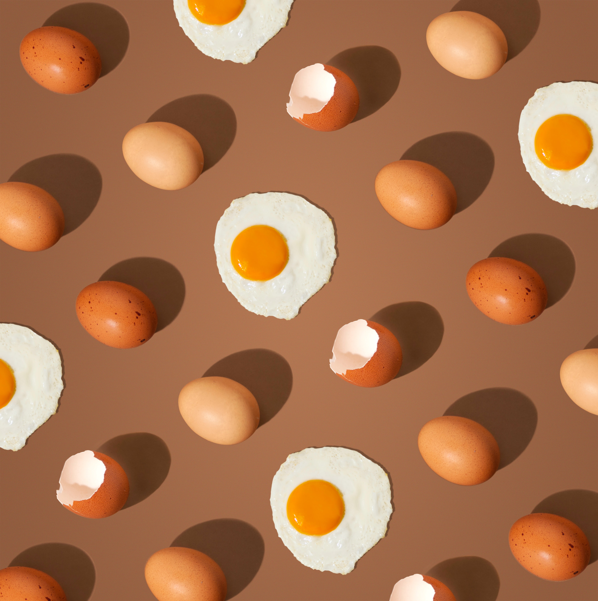

OVO FRITO

Receita de ovo frito
Ingredientes
- 1 ovo;
- azeite;
- sal a gosto;
- orégano a gosto.
Modo de preparo
- Aqueça a panela e adicione um fio de azeite;
- Quebre o ovo sobre a panela;
- Adicione uma pitada de orégano e sal;
- Depois sirva imediatamente, e bom apetite!
Informações adicionais
Adicionando bacon fica ainda mais gostoso. Além de ser um ótimo acompanhamento para suas refeições.